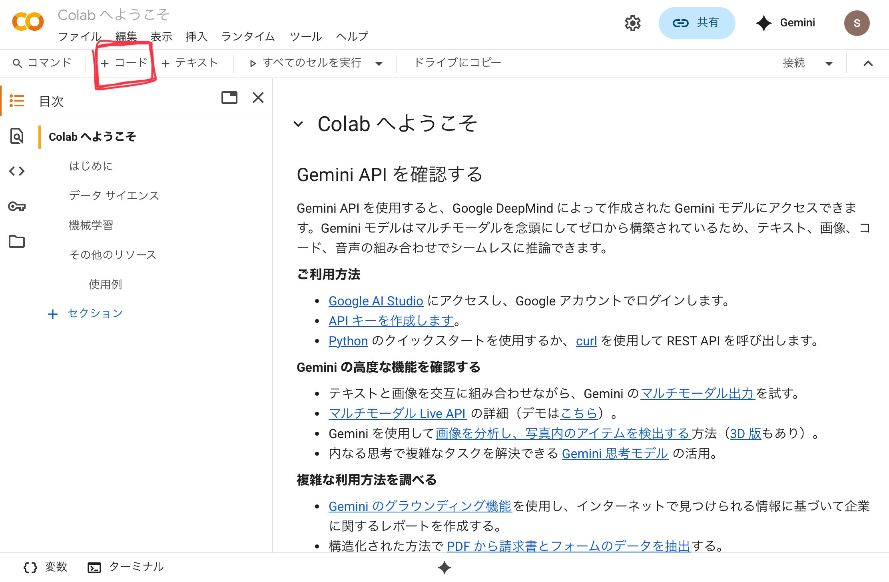

この本について
この本は0からプログラミングひいてはITに関わるたくさんの分野を体系的に学ぶための一つの一貫した長い長いチュートリアルのようなものです。またこれとは別の素晴らしい文献を探すための索引でもあるように努めています。しばしば参考必須の別サイトが紹介されることがあります。 できるだけモダンで一般的な技術を学べるようにしていますが、もしかしたら何かに偏っていたり何かが抜けているかもしれません。GitHubのissueでその旨を述べてください。
この本は執筆中であり、まだまだ未完成であることを確認してください。
読み進め方
基本的に最初から読み進めていくように作られていますが、もしあなたに何らかの背景があれば知っていることを飛ばすことも可能です。 もしあなたが本当にプログラミングについて何も知らないなら最初から着実に読み進めることをお勧めします。
もしscratchのようなビジュアル系プログラミング言語に自信があるよという方は、1章Python初級編を飛ばして2章から読んでも良いかもしれません。
自己紹介
私は中学2年の時にプログラミングを独学で学び始め幸運なことにエンジニアの端くれになることができました。この本は学習のアウトプットや私のようなプログラミングについて好奇心旺盛な学生を助けるために高校2年生の夏に書き始めました。筆者は生粋の理系でありますから文章についてはあまり気にしないでください。
ご連絡は、GitHubまでお願いいたします。
修正依頼・コントリビュートについて
GitHubのissueで報告してもらえたらできるだけ対応・修正しようと思っています。
修正のみ受け付けております。コントリビュートは現在受け付けておりません。
ライセンスについて
この本の著作権はsonnekoにあります。無断で再公開・改変することは控えてください。自分用にスマホなどにダウンロードして使うのはもちろんOKです！1ただこの本は頻繁に更新されますから、最新の情報を得るためにブラウザで閲覧することをお勧めします。
-
右上の印刷マークからこの本の全てをPDF化してダウンロードすることができます。 ↩
この本の地図
さてまずは全体像を眺めることから始めましょう。一口にプログラミングと言ってもさまざまな分野があります。代表的なものを以下に挙げます。
- Web開発
- アプリ開発
- ゲーム開発
- システム開発
- 組み込み開発
- データ分析・AI開発
分野の難易度を語るのは難しいですが、簡単なものは上の方に難しいものは下の方にあると筆者は思います。
あなたは何をしたいですか？（もしくは何を知りたいですか？）
選択肢がわからないと決めようがありませんのでそれぞれについて軽く紹介します。
Web開発
WebサイトもしくはWebアプリを作ります。おそらく一番とっかかりやすいです。この本では二番目に紹介しようと思っています。WebアプリというのはGoogleDriveのようなWebブラウザで動くアプリのことです。後者と前者には明確な違いはありません。
アプリ開発
アプリを作ります。アプリ開発と言ってもiOS・Mac・Android・Windowsと何のOSで動くアプリを作るかによってかなり変わってきます。最近はWeb開発を元にしたアプリ開発の手段も増えてきて高度なことをしないのであればWeb開発ができればアプリ開発もできるでしょう。
ゲーム開発
ゲームを作ります。Unityなどのゲームエンジン（ゲームを作るための便利アプリ）を使うかどうかで変わってきますが、単純なプログラミングの知識とともにグラフィックや実行速度を出すための知識も必要になることがあります。筆者はあまり知りません。
システム開発
社内システムなどを構築します。筆者からするととても地味ですが裏側で活躍していると思います。筆者はやったことがありません。
組み込み開発
冷蔵庫・電子レンジなどの家電や回転寿司の管理システム・電子辞書など機械と情報の狭間となる場所です。CPUの動作に関する高度な知識が必要とされることが多く難しいです。
データ分析・AI開発
今が旬な分野です。LLM（chatGPTやGemini）の仕組みや画像処理やPOSシステム（コンビニなどでお客さんの情報をたくさん収集することで仕入れを調整したり利益を予想したりするためのシステムです。）などを学ぶことができます。情報というより線形代数など高度な数学が必要とされます。
とりあえず…
あなたがどれを学びたいかに関係なくこの本はあなたの役に立つように設計されています。 自分がどれをしたいかわからないという大部分の人はこの本を順番通り読み進めていけばいいでしょう。途中で自分のしたいことが見つかるはずです。 もし何か特定のことを学びたいのであれば、この本の後半（4章以降）はあなたに向いていないかもしれません。なぜなら後ろに行けばいくほどWeb開発・アプリ開発に偏っているからです。しかし1,2,3章はどんな分野でも必要な基礎的なことだと筆者は思います。
どんな挑戦も最初の一歩から
この本をどのように読むか決められましたか？ぜひスタートしてください。この本はあなたには必要ありませんか？ブラウザバックしましょう。また会えることを願っています。
Python実行環境
一番最初に勉強する言語はPythonです。AIなどの研究分野でよく使われる言語で最近ではよく使われているので勉強しておいて損はありません。実際に最も有名な言語と言われています。1
このPythonの章は、「Pythonを学ぶ」ではなく「Pythonで学ぶ」構成となっています。Pythonの学習というよりかはPythonを通して各種プログラミング言語に共通する基本的な概念を理解することを目指しています。
Pythonは筆者がある意味で嫌いな言語ではありますが筆者が一番初めに学んだ言語でもあります。安心してください。とても簡単です。
以下の内容はGoogle Colab の準備: ゼロからのPython入門講座 - python.jpと同時に読み進めることをお勧めします。
プログラマが新しく言語を学ぶ上で最初にすることは、実行環境の整備とHello Worldです。 あなたはもはやプログラマなのですから、それに倣って実行環境の整備から始めましょう！
実行環境の整備
Python学習に必要な実行環境を用意しましょう。Pythonをパソコンにインストールする方法を紹介することも可能ですが、それに詰まってしまったらあなたがプログラミングに挫折してしまいそうなのでもっと簡単な方法を紹介します。 それはGoogleColabというWebサービスを利用することです。無料なので安心して利用してください。
https://colab.research.google.com/
上記のURLにアクセスしたら実行環境の整備は完了です。 もしかしたらGoogleにログインするよう迫られるかもしれません。Googleアカウントの作成方法やログイン方法はこの本の範疇を超えるので解説しません。Web上で素晴らしい文献が見つかるでしょう。
Hello World
ではHello Worldを行いましょう。Hello Worldとは何ですか？Hello Worldはプログラマがその言語きちんと動作することを確認するためにしばしばする行為です。具体的には単にHello Worldとだけ出力するプログラムを動かすことです。
Hello Worldは「こんにちは世界」という意味ですが、特に理由はありません。2

赤い印をしている+コードというボタンを押してコードブロック（プログラムを書く場所）を新しく作成しましょう。続けて以下のHello Worldプログラムを手打ちもしくはコピ＆ペーストしてください。
# 初めてのHello Worldプログラム
print("Hello World")
コードブロックの左にある▶️ボタンを押してHello Worldを実行してください。最初は少し時間がかかりますが、すぐ下のブロックに結果が表示されます。“Hello World“というテキストをprintするよう指示をしたので、以下のように表示されたら成功です。
Hello World
もし▶️ボタンが真っ赤になりHello Worldと表示されない場合は、もう一度タイプミスがないか確認してください。特に丸括弧やクオテーションマーク（“）が全角ではなく半角で入力されていることを確認してください。コンピュータは厳格なので少しでも違ったら「わかんない！」とエラーを吐き出してしまいます。
このからあなたはバリバリプログラムを書いていくわけなのでたくさんのエラーに遭遇する可能性が高いです。そうなる前に一般的にエラーに対してどのように対処すればいいか体系的にまとめておきましょう。
同時に読み進める（必須）： Google Colab の準備: ゼロからのPython入門講座 - python.jp
発展・辞書（任意）： Python公式ドキュメント和訳
-
TIOBEによる統計より（2025/9/20現在の情報） ↩
-
「どうしてHello, World!なの？」という記事がありました。興味があったらどうぞ。 ↩
エラーが出た時は
このページを読むのは、エラーが出てからでいいかもしれません。エラーが出てしまったらこんなページがあったことを思い出してください。
エラーが出た時にあなたが取るべき行動をまとめてみました。優先順位をつけていますから何かエラーが出た時は上から下に適用できるかを調べていってください。後半にいくほどレベルが高くなります。
エラーメッセージを読む
エラーメッセージとはエラーが出たことを示す文章または記号などのことです。英語のことが多いですが頑張って読みましょう。9割型これで解決します。
落ち着いてもう一度自分のコードを読んでみる
全角文字など変な文字が入っていないですか？
エラーメッセージ全体（もしくは一部）をGoogle検索
多くの人が遭遇するエラーの場合は、もしかしたらそのエラーについて誰かが情報を発信しているかもしれません。ただしどちらにしろエラーメッセージを読み何を検索すればいいかを知ることはあなたがしなければいけません。
AIに聞く
わからなかったら機械翻訳に通したり LLM=Large Language Model（GeminiやchatGPTなどのこと・大規模言語モデル）に聞いてみましょう。ただし、こうしたらいいよと示されたコードをコピペするのではなくエラーメッセージの意味を理解するよう努めてください。AIがさらに賢くなるだけであなたはAIに使われる人になってしまいますよ。またAIも人間と同じように間違いをするので気をつけてください。後述の「公式のドキュメント・リファレンスを読む」のために検索を依頼するのもいいかもしれません。
誰かに聞く
あなたがどこかですでに働いているのであれば質問する人が絶対いるでしょう。しかしあなたが学生の場合は自分の学校にあなたと同じような境遇の人がいないかもしれませんし見つけ出すのが難しいかもしれません。その場合この選択肢は取ることができませんね。独学というのは難しいものですが特殊な達成感を得ることができます。ぜひ頑張ってください。
公式のドキュメント・リファレンスを読む
リファレンス=referenceとはその技術についての全てが述べられている自然言語の文献です。リファレンスから必要な部分を見つけ出したりそれを読むことは大抵の場合とても難しく根気が入りますが、その分あなたは学ぶことができるでしょう。
各種質問サービス（Yahoo知恵袋・Qiita・StackOvweFlowなど）で質問する
Yahoo知恵袋は知っているでしょう。Qiitaというのは日本人プログラマ向けの記事投稿サービスですが質問投稿サービスも存在します。StackOverFlowというのはグローバルバージョンのQiitaです。英語が必須となります。
GitHubで質問する
GitHubとはプログラマのSNS兼プログラム置き場みたいなものです。こちらは難易度というかハードルが高いです。英語が使えることは前提条件です。
ソースコードを読む
もし対象がOSS（Open Source Software）ならばあなたはGitHubでプログラムを読みエラーが出る原因を突き止めることができます。その対象に対してかなり深く理解していないといけないですし時間がかかります。
もしかしたらあなたは間違っていないのかも
言語でいうZigやMoonbit・フレームワークでいうSolid.jsなど新しく出てきた技術は往々にしてバグがあります。広く視点を持ってフレームワークや言語のバグである可能性も考えてみてください。ただ、もしあなたがプログラミングを始めたばかりなら確実にそんなことはありません。
四則演算の実行
Hello Worldを出力することができたので、次は計算をコンピュータに依頼してみましょう。
以下のプログラムを実行してみてください。（もしプログラムの実行の仕方がわからないならPython実行環境を読むことをお勧めします。）
# 1足す2を出力する
print(1 + 2) # 3
# 1引く2を出力する
print(1 - 2) # -1
# 2掛ける3を出力する
print(2 * 3) # 6
# 3割る2の切り下げを出力する
print(3 / 2) # 1
# 3割る2の小数表記を出力する
print(3.0 / 2.0) # 1.5
# 5割る3の余りを表示する
print(5 % 3) # 2
足し算=addと引き算=subtractionと掛け算=multiplicationと割り算=divisionそして余り=remainderを実行し出力してくれましたか？このプログラムから学ぶことはたくさんあります。足し算は+（プラス）、引き算は-（マイナス）、掛け算は*（アスタリスク）、割り算は/（スラッシュ）を用いるみたいですね。足し算・引き算はそのままで何もいうことがありませんが、掛け算や割り算は×や÷と書いてもできないというのは覚えておいてください。あと%などの余りを意味する見慣れない演算子もありますね。
ここで注意したいのは、二つの割り算の違いです。
# 3割る2の切り下げを出力する
print(3 / 2) # 1
# 3割る2の小数表記を出力する
print(3.0 / 2.0) # 1.5
上の割り算における2、3という数字は「整数=Integer」として扱われています。なので計算結果も整数となります。
しかし、下の割り算では2.0、3.0という数字は「小数=decimal number」として扱われているので、結果も小数です。このように小数であることをプログラムで伝えるには、.0をつける必要があります。
変数定義と使用
変数=Variableと呼ばれる概念とPythonでのその使い方について説明します。
変数とは
変数とはデータを入れるための箱のことです。箱にはデータを入れてそれを後でデータの代わりに使用することができます。
前回の記事で紹介した足し算をしてそれを出力するプログラムを変数を使って書き直すとこんな感じです。
print(1 + 2)
↓↓↓
one = 1
two = 2
print(one + two)
今度はレジで合計金額を計算するというより複雑なプログラムの例を紹介します。
# 商品の価格を定義する
# 商品Aの価格
price_item_a = 150
# 商品Bの価格
price_item_b = 380
# 商品Cの価格
price_item_c = 220
# 購入する商品の数を定義する
# 商品Aの購入数
quantity_item_a = 2
# 商品Bの購入数
quantity_item_b = 1
# 商品Cの購入数
quantity_item_c = 3
# 各商品の小計を計算する
subtotal_item_a = price_item_a * quantity_item_a
subtotal_item_b = price_item_b * quantity_item_b
subtotal_item_c = price_item_c * quantity_item_c
# 合計金額を計算する
total_amount = subtotal_item_a + subtotal_item_b + subtotal_item_c
# 計算結果を表示する
print(f"商品Aの小計: {subtotal_item_a}円")
print(f"商品Bの小計: {subtotal_item_b}円")
print(f"商品Cの小計: {subtotal_item_c}円")
print(f"合計金額: {total_amount}円")
これまでの四則演算・変数の組み合わせですね。
別に写経する必要はありませんが、サンプルコードは読んだ方が良いと思います。プログラムを意味に落とし込むのに慣れるためです。
変数の中身を変更する
変数の中身は後で変更することもできます。
# リンゴは170円
apple_prive = 170
# やっぱり値上げする
apple_price = 190
print(apple_price) # 190が出力される
変更することを再代入と言います。
再代入をするときによくあるミスを紹介しておきます。絶対この後一回は経験するので頭の片隅に入れておいてください。
# リンゴは170円 apple_price = 170 # やっぱり値上げする（？） appple_price = 190 print(apple_price) # 170が出力される。「あれ？？」以上のように再代入する際に1文字でも違うと(小文字が大文字になっただけでも！)、新しい変数を作ったのだと勘違いされるので注意してください。
関数の使用
Pythonや他には関数という概念があります。プログラミングにおける関数は数学における関数とは最初は全く別のものとして考えておいてください。
関数の書き方
関数とは、入力を受け取って出力するようなものです。以下の例では leftとrightを受け取ってoutputを返しています。
def add(left, right):
output = left + right
return output
output = add(1, 2)
print(output) # 3が出力される
defは関数を定義するという記号で、その後に関数の名前がきます。これは比較的自由に決めることができます。
その後、受け取るもののリスト(パラメータ) がきます。リストはあなたが決めた変数名を,区切りで記入してください。
それを書くことができたら:で締めくくって、その後関数の中身を書いていきます。ここにこの関数が実行する命令を書いていきます。複数行になって構いません。この関数の中身を書く範囲は右端をタブもしくは半角の空白4つで埋める必要があります。これをインデントと言います。
命令が終わって何かを返す必要があるのであればreturnでそのすぐ後に来たものを返しその関数の処理を終了します。
注意点として、
returnが実行されるとその後の処理は実行されません。def return_zero(): return 0 print("You can't find me.")例えばこの場合は
print("You can't find me.)は実行されません。
関数の記法：
# 関数を定義する
def 関数の名前(引数リスト):
処理..
...
# 関数を呼び出す
関数の名前(引数リスト)
変数の有効範囲について
関数内で新たに作った変数はその外から見ることができない
以下の例はエラーとなってしまいます。
def add(left, right):
output = left + right
return output
print(output)
「outputという変数はトップレベルで定義されていません。」というエラーが出るかと思います。関数内部で定義した変数はその関数の外から見ることができません。
この場合「output変数の有効範囲はadd関数の中身である」ということができます。
この変数の有効範囲のことをスコープと言います。
しかし、新たに変数を作って覆い隠すことは可能です。
def do_nothing():
a = 10
a = 1 # 再代入ではなく新しく定義している
print(a) # 1と出力される。同一スコープで定義されているので問題なく使える
変数を「見る」時は、まずは狭いスコープで定義されていないかを確認し、定義されていなかったらより広い範囲のスコープで定義されていないかを確認する。
a = 10
b = 1
def do_nothing():
a = 1 # 再代入ではなく新しく定義している
print(a) # aはdo_nothingで定義されているのでそちらが優先され1が出力される
print(b) # do_nothingで定義されていないので外側のものを読み取るので1と出力される
print(a) # 10と出力される
Pythonプログラム全体で利用可能な変数のスコープを特別にトップレベルスコープと呼びます。
型について
プログラミングには型と呼ばれる概念があります。それを文字列型を例に説明していきます。
型とは？
変数定義と使用で述べたようにプログラミングには変数なる概念があり、それはデータを入れる箱であることを説明しました。
型=typeとはその箱の種類のことです。変数といっても入るのは数以外にも他のデータも入ります。型には整数・浮動小数点などを入れることができます。
浮動小数点とはコンピューターで小数を表すための規格の一つです。英語では
floatと呼びます。
さっき紹介したもの以外にも文字列型があり、pythonではstrという名前がつけられています。
message = "Hello" # "hello"は文字列
以上のようにするとmessage変数は文字列型となります。 以下のように明示的に記述することもできますが、意味は全く同じです。
message: str = "Hello"
このような: strという構文を「型アノテーション=type annotation」と呼びます。このような明白なパターンは書かなくても問題ないですが、複雑なものになるとこのような記述がプログラム自体の理解を助けることもあります。最初はそのようなものが存在するんだな程度で結構です。
色々な言語の型
現代のプログラミング言語でよく使われる代表的かつ原始的=primitiveな型をまとめます。
| 名前 | 書き方 | 説明 | 覚えかた |
|---|---|---|---|
| 整数 | int integer i32 | 自明 | intergerは整数という意の英単語 |
| 浮動小数点 | float f32 | 小数のこと | floatは浮くという意の英単語 |
| 文字 | char | 一文字 | character(文字)の略 |
| 文字列 | String Str char[] | char[]は文字の配列という意味 | stringはひもと言う意味で「長く続く」というニュアンスを継承していると思われる。 |
| 真偽値 | bool boolean | trueかfalseかの2通りのデータ | これについての数学でブール代数という分野があります。 |
| null | null nil None | 未初期化という意味 | なし |
message = "hello"
# messge は ここでは文字列型
message = 100
# message は ここでは整数型
以上のように、Pythonは動的型言語と呼ばれる言語の一つでプログラム内で同じ変数の型がコロコロ変わることができます。 世の中には静的型言語と呼ばれる対照的なものもあり、代表例はJavaなどです。
String message = "Hello World"; // message変数はいつでもString型
message = 10 // String型なのにint型の値を代入しているのでエラーが発生する
どちらがいいかは何のために使うかによって変わってくるのですが、最近のトレンドは静的型のようです。ちなみに僕は静的型が好きです。一般には静的型の方が安定で大規模開発に向いていて、逆に動的型はその場限りのプログラムや非エンジニア・アジャイルな1開発に向いていると言われています。
-
アジャイルとは、大雑把にいうと品質ではなく開発速度を優先する開発方法のことです。 ↩
if文
ここでは制御構文の一つif文を学びます。
if (真偽値):
Trueの時の処理
真偽値によって異なる処理をさせることができます。
真偽値とは、TrueかFalseのどちらかを取るような型のことです。数学で言うと、それぞれ真か偽になります。
例：
def my_abs(number):
if (number < 0):
return -number
elif (number > 0):
return number
else:
return 0
my_abs()という関数は絶対値をとる関数です。
ここで、不等号が登場したのでその関係について説明しておきます。
< > <= >= ==という5つの記号は数の比較に用いられます。
| 記号 | 意味 |
|---|---|
== | 等しい |
<= | 以上 |
>= | 以下 |
< | より大きい |
> | より小さい |
このようにすると2つの隣に書いてある数字から、その数字の性質についての真偽値を得ることができて、それをif文に入力しているようなイメージです。
よって別にifの中に不動号を置かないといけないと言うことはなく、以下のようなこともできます。
x = 10
is_bigger = x > 20
if (is_bigger):
print("it's bigger than 20")
else:
prrint("it's smaller or 20")
is_biggerには、右に書いてある不等号の結果つまりは真偽値が代入されて、その中身(この場合はFalse)がif文の中で使用れています。
真偽値
今回は真偽値をより深掘りしていきます。
典型的に中学校の数学で習う論理演算をプログラミングの世界でも使うことができます。
例えば、xが10から20の範囲にあるかどうかを判定するにはどうすればいいでしょうか？
x = 14
if (x > 10):
if (x < 20):
print("x is between 10 and 20.")
このようなこともできますが、以下のようなこともできます。
x = 14
if (x > 10 and x < 20):
print("x is between 10 and 20.")
x > 10の結果と、x < 20の結果がandで結ばれることで、どちらもTrueである時のみ最終的な結果がTrueになるようにできます。
数学のように10 < x < 20と書くことはできないので注意してください。
他にもどちらかがTrueならばもう一方がどうであってもTrueになるというorも使うことができます。
x = 32
output = x < 10 or x > 20
print(output) # False
この例では、10未満もしくは20より大きいことを確認しています。
Pythonでは、andの代わりに&&や、orの代わりに||も使うことができます。他のプログラミング言語だと後者しか使えないことが多いので注意してください。
while文
print関数を100回呼び出したい時を考えます。 脳筋にprintを100回書くこともできますが、やっぱり1000回にしてと言われた時に対応できません。 よってそのための構文を紹介します。
while True:
print("Hello!")
while文は中の処理を繰り返すという構文です。後ろの値がTrueである間繰り返し実行されます。この場合は無限ループを起こすので実行が止まりません。
一番最初の例のように100回繰り返したい場合は以下のようにします。
index = 0
while index < 100:
print("hello!" + str(index) + "times.")
index = index + 1
頭の中で一つずつシミュレーションしてみてから、実際に実行してみてください。
この場合は、print関数はindexという変数が0から99の間実行されます。
for文
for index in range(10):
print(str(index))
for文もwhileと同じく繰り返しを表す構文の一つです。例えば上記のプログラムは以下のようなプログラムと同じ挙動を示します。
index = 0
print(str(index))
index = 1
print(str(index))
index = 2
print(str(index))
# ...(中略)
index = 9
print(str(index))
range(10)は、0から9までの数字の羅列を「オンデマンドで」生成する値を返すという関数です。このfor文の後ろ(range(10))には、イテレータという種類の値ならなんでも入ります。
例えば、次に学ぶリストもイテレータの一種であるのでここに入れることが可能です。
fruits = ["apple", "banana", "orange"] # リスト型
for fruit in fruits:
print(fruit)
リスト型
// TODO: 執筆
for range文
// TODO: 執筆
辞書型
// TODO: 執筆
関数定義
// TODO: 執筆
演習
// TODO: 執筆
展望
// TODO: 執筆